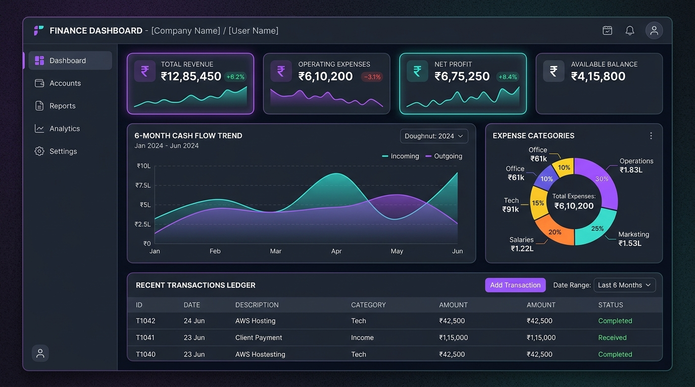

Interactive Live Application
FinPulse BI — Personal Finance Tracker & Executive BI Dashboard
A responsive, client-side financial analytics application engineered to help users track cash flows, evaluate savings rates, monitor category budgets, and inspect relational SQL queries.
Executive KPI Scorecard: Real-time calculations of Monthly Inflow, Outflow, Net Surplus, and Savings Rate with Month-over-Month (MoM) growth variances.
Interactive Data Visualizations: Dual-spline 6-month cash-flow trendlines and expense category distribution powered by Chart.js.
Interactive SQL Query Showcase: Live modal demonstrating exact MySQL queries behind every calculation (Window Functions, CTEs, Aggregations).
Excel-Ready CSV Export: Clean UTF-8 BOM data export for audit reviews in Microsoft Excel.